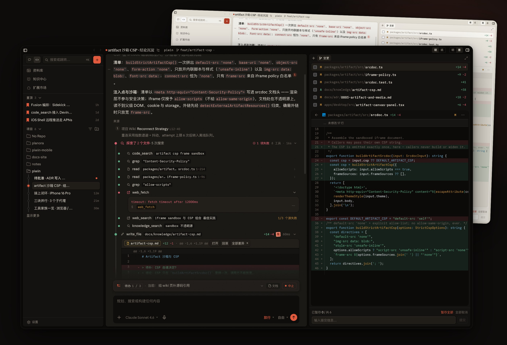
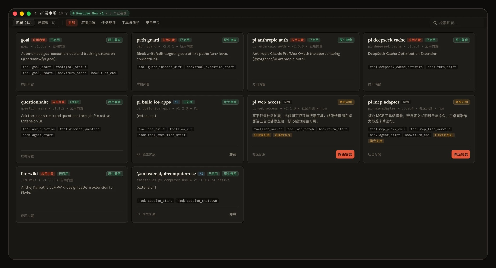
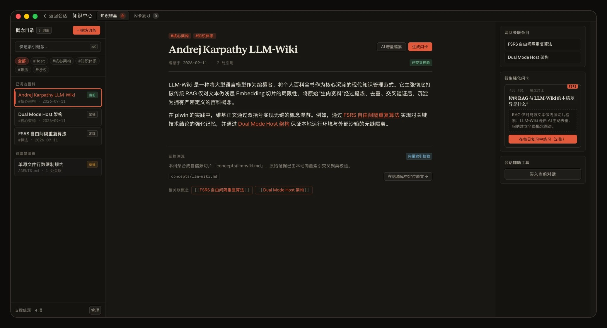
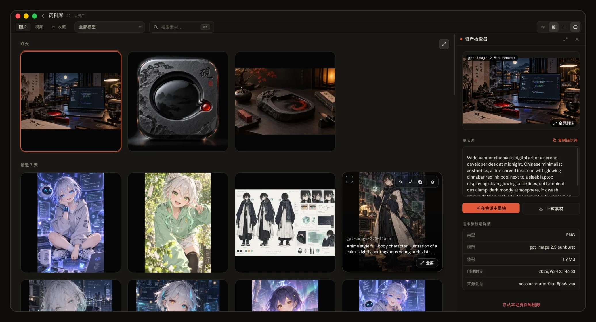
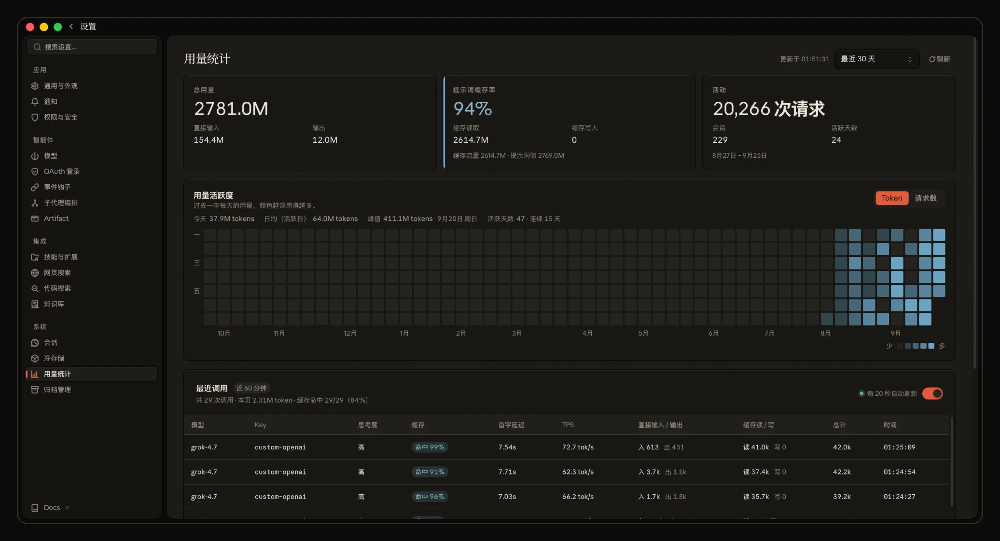

基于 Pi 的私人 Coding Agent
砚者，研墨沉淀、静水流深。
集百家之所长，归于一案之间。
客户端与 Host 分离：会话、配置与执行统一由 Host 掌管，所有数据留在你自己的机器上。
会话 · 媒体 · 知识库
扩展 · 订阅凭据
市场、Git、本地路径一键装，
下一轮对话即生效。
三套内置方案，输入框里一键切换；
也能自建角色、模型与并发。
说话和干活分开：一边聊方案，
一边让 Agent 在后台推进，随时插话。
你：把登录按钮改成朱红，顺手跑下测试。
Live：好，已交给 Agent，你接着说。
Live：改完了，42 个测试全绿。
不按厂商堆列表，而按“用来干什么”分开配，
每一类都有默认模型与调用测试。
免 Key 起步，搜索源与网页抓取
随时切换，不打断会话。
纯文本模型也能看图：截图交给
轻量多模态模型提炼成文字。

· 页面：Artifact 沙箱 CSP 结论
· Diff：srcdoc.ts +14 −4
· 报错：web_fetch 超时 12000ms
code_searchHost 内置检索工具：搜索在独立只读过程完成，
只把命中路径、定义与调用关系交回。
Releases 下载 dmg，拖进「应用程序」。内置 Node 22 + Host，零环境门槛。
pnpm dev:tauriOAuth 一键登录官方订阅，或填任意 OpenAI 兼容端点（BYOK）。
Chat 快问快答，Agent 深入工程；/goal 拆解交付。
artifact csp frame sandbox"Content-Security-Policy"packages/artifact/src/srcdoc.tsiframe-policy.tspackages/artifact/src/srcdoc.tspnpm test --filter artifact



研墨沉淀，静水流深
MACOS · IOS · WEB · MIT
宣传片 · 1 分 50 秒 · 建议开启声音